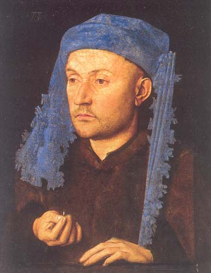
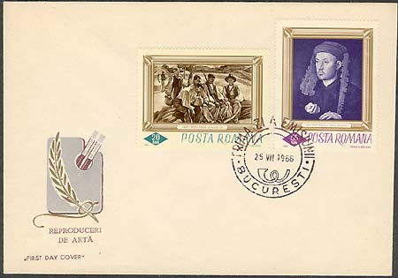

|
The National Museum of Art of Romania Man with a Blue Cap |
Jan van Eyck (active from 1422, died 1441) was the greatest artist of the early Netherlands school. He held high positions throughout his career, including court painter and diplomat in Bruges. So outstanding was his skill as an oil painter that the invention of the medium was at one time attributed to him, with his brother Hubert, also a painter. Van Eyck exploited the qualities of oil as never before, building up layers of transparent glazes, thus giving him a surface on which to capture objects in the minutest detail and allowing for the preservation of his colors.

In 1894 Viennese art historian Theodor von Frimmel attributed the small panel *shown about and below( to Jan van Eyck). His view was further supported by many reputed scholars. Frimmel also rightfully claimed that Durer's monogram and the date 1492 were a later, 18th century addition. The figure, as yet unidentified, is a typical example of van Eyck0's portraiture: a three-quarter bust, with the sitter in a static stance, his shadowed left side turned toward the onlooker.

The ring ostentatiously held by the man is used to define either an engagement or the trade of a jeweler; comparison with the 1436 portrait of Jan de Leeuw in Viena (Kunsthistorisches Museum) determined this interpretation. The underdrawing, the direction toward which the character looks -- across the closed space of the painting, avoiding direct confrontation -- is indicative of the fact that the portrait was not finished in the sitter's presence.

The
style, the manner in which the hands and the chaperon-type hat, with it
crested rim, are executed suggest a date in the earlier 1420, making this
presumably Van Eyck's earliest portrait to have come down to us.
The painting is presented in the Department of European Art,
Painting and Sculpture, of the Museum. The painting was brought to Bucharest,
under the Communist regime, from the Bruckenthal Museum in Sibiu. This has
been established by Baron Samuel von Bruckenthal (1721-1803), whose collection
it initially comprised. Baron Bruckenthal was Governor of Transylvania
(1777-1787) and a counselor to Empress Maria Teresa. (After Maria Matache)
The stamp was issued in 1966, in a set of six stamps. This was the first Romanian set of paintings that was issued in big format. The print run of the stamp was of 1,500,000 pieces, the value of 55 Bani representing during a long time the postage for the inland letters. The stamps were designed by I. Druga and G. Bozianu. All stamps in the set are covered by a finish. The painting itself is shown in a monochrome blue color. For this reason, in our opinion, it should be one day reissued in its original colors.
For some supplementary information please move the mouse pointer over the images.
| Published:
06/23/2002. Revised:
07/29/02. Copyright © 2002 by Victor Manta, Switzerland. All rights reserved worldwide. |